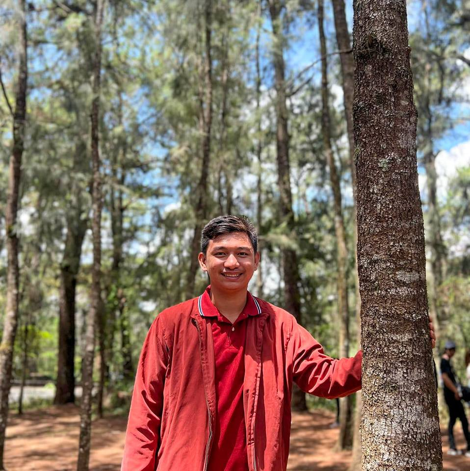

About Us

Justine Cesar Ocampo
Web Developer
I'm Justine Cesar Ocampo, a student web developer passionate about creating functional and visually appealing websites and applications. Pursuing a degree in BS Information Technology, I have experience in programming languages such as HTML, CSS, JavaScript, Java, and Python. I'm a creative problem-solver and always eager to learn new web development skills and techniques. In my free time, I practice coding, play online video games such as LOL and Valorant, and read about manhwa, manga, and science, technology, and innovation.
Resume
Kyle Reginaldo
Web Developer
I'm Kyle Reginaldo, a web developer passionate about creating functional and visually appealing websites and applications. I have experience in HTML, CSS, JavaScript, and other programming languages. I'm always eager to learn and improve my skills. In my free time, I enjoy exploring new technologies and solving coding challenges.
Resume

Reign Reyes
Web Designer
I'm Reign Reyes, a web designer with a passion for creating visually stunning and user-friendly websites. I specialize in UI/UX design and front-end development. I'm constantly seeking inspiration from various design trends and always strive for pixel-perfect results. In my free time, I enjoy attending design conferences and exploring new design tools.
Resume

Aaron Deraya
Full Stack Developer
I'm Aaron Deraya, a full-stack developer with a passion for building scalable and efficient web applications. I have experience in front-end and back-end technologies such as HTML, CSS, JavaScript, PHP, and MySQL. I enjoy tackling complex problems and finding elegant solutions. In my spare time, I contribute to open-source projects and stay up-to-date with the latest development trends.
Resume
Philip Campogan
Front-end Developer
I'm Philip Campogan, a front-end developer specializing in creating engaging and interactive user interfaces. With a strong foundation in HTML, CSS, and JavaScript, I strive to deliver visually appealing and user-friendly websites. I'm constantly exploring new frameworks and libraries to expand my skills. In my free time, I enjoy contributing to coding communities and experimenting with creative coding projects.
Resume